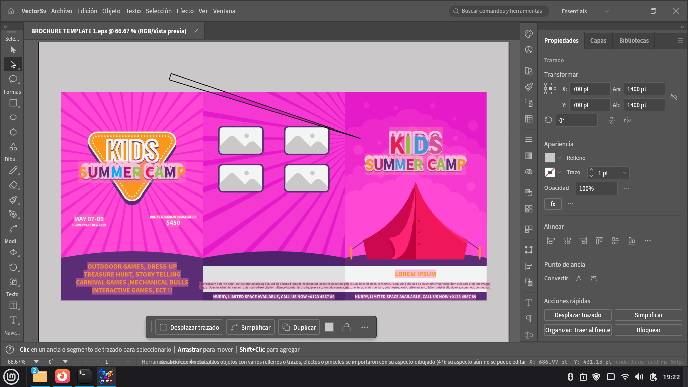
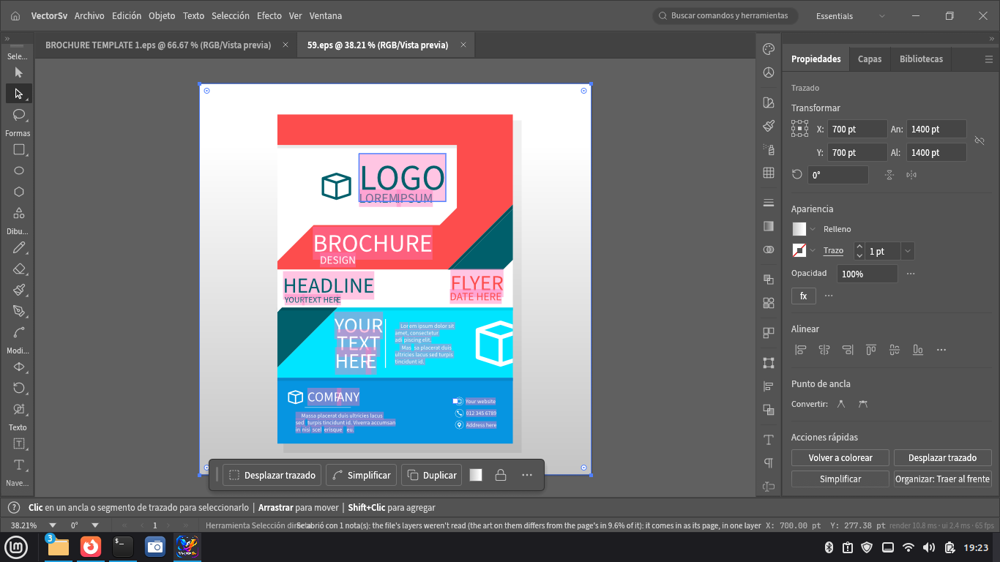
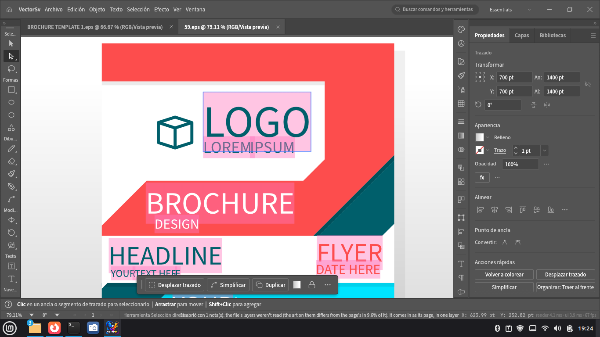
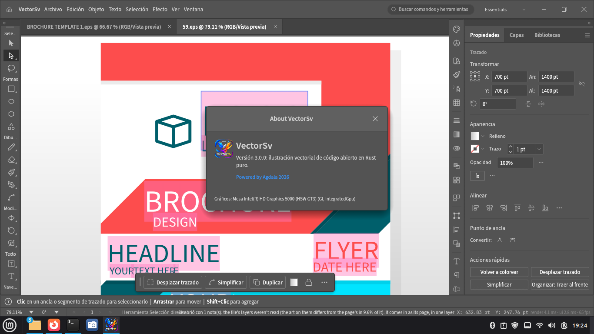

Ilustración vectorial profesional.
Gratis. Libre. Sin suscripciones.
VectorSv es un editor de gráficos vectoriales gratuito y de código abierto: la alternativa libre a Adobe Illustrator. Dibuja con la pluma Bézier, trabaja con texto, degradados, mesas de trabajo y efectos en vivo, y abre tus archivos EPS, SVG, PDF e Illustrator (.ai) tal cual. Escrito en Rust puro: rápido, estable y multiplataforma.
Linux x86_64 · Versión 4.0.0 · Licencia MIT / Apache-2.0
Trazados, nodos, curvas y puntos de ancla con control total: desplaza, simplifica y duplica con un clic.
Importa Encapsulated PostScript, PDF y archivos compatibles con Illustrator conservando capas, texto y estilos.
Texto en punto y en área, estilos de párrafo, contorneo a trazados y búsqueda de fuentes del sistema.
RGB, CMYK, grises y tintas planas; degradados lineales y radiales, mallas, transparencia y modos de fusión.
Capas, subcapas, plantillas, guías, cuadrículas y múltiples mesas de trabajo por documento.
Motor en Rust con renderizado por GPU a 60+ fps. Tus archivos se recuperan solos si algo falla.
| Formato | Extensión | Uso |
|---|---|---|
| VectorSv | .vectorsv | Formato nativo: guarda todo editable |
| Plantilla | .vctemplate | Plantillas reutilizables |
.pdf | Documento portable, con edición preservada | |
| SVG / SVG comprimido | .svg .svgz | Gráficos para web |
| Encapsulated PostScript | .eps | Intercambio con imprenta y otros editores |
| PNG · JPEG · WebP · TIFF… | .png… | Exportación ráster a cualquier resolución |
Archivos EPS reales abiertos y editados en VectorSv 4.0.




sudo dpkg -i vectorsv-4.0.0-linux-x86_64.deb
Debian, Ubuntu, Mint, Pop!_OS…
sudo rpm -i vectorsv-4.0.0-linux-x86_64.rpm
Fedora, openSUSE, RHEL…
chmod +x vectorsv-4.0.0-linux-x86_64.AppImage ./vectorsv-4.0.0-linux-x86_64.AppImage
Cualquier distro, sin instalar.